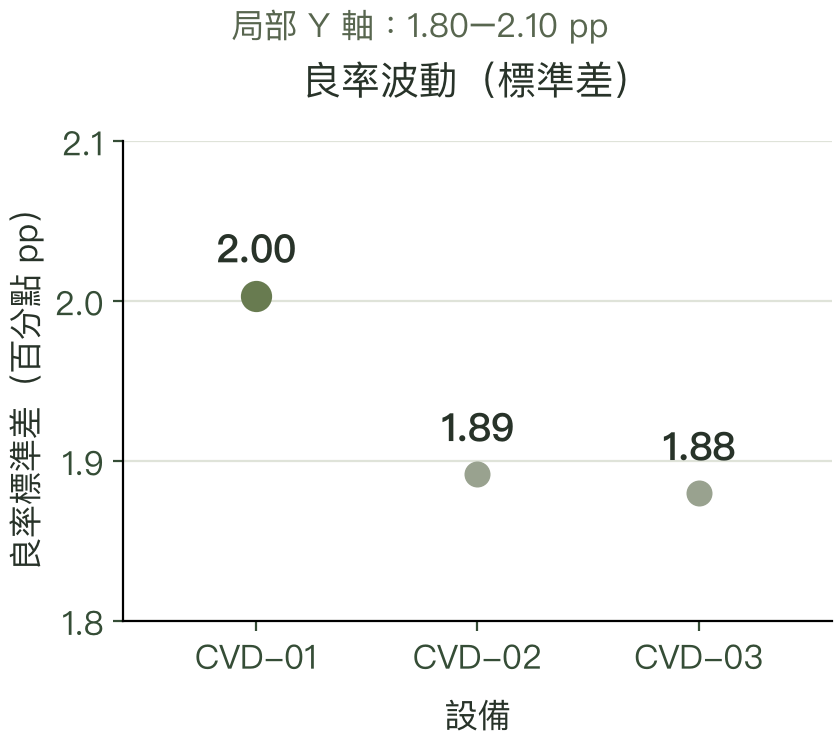
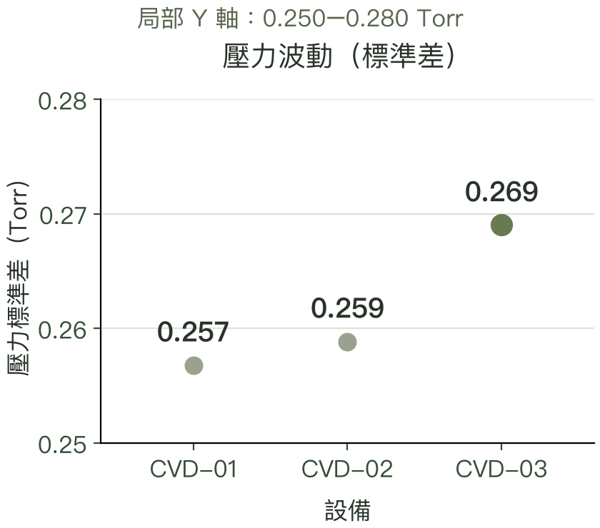

THE INVESTIGATION / 五幕工程故事
Follow
the evidence.
先問發生了什麼，再問為什麼。
用數據縮小問題，用驗證確認答案。
可直接跳至任何一幕，或展開完整分析。
THE INVESTIGATION01 / 05
異常，從哪裡開始？
同一台設備，同一段時間。
先把異常放回時間軸，故事才有起點。
7 筆連續低良率批次
平均值：低良率 7 批 ／ 當天其餘 19 批
- Temperature 溫度
- 325.17 / 320.62 °C
- Gas Flow 氣體流量
- 106.66 / 100.23 sccm
兩項也較高；日內分組含不同配方，先作調查線索。
先找時間，再找線索。

良率：% · 壓力：Torr · 缺陷：個／批放大圖表 ↗
CVD / 發現異常模擬資料 · 工程調查，仍待驗證
先找時間點，再看一起改變的參數。
我先檢查批次、時間與缺失值，再以 Yield < 95% 篩出需要調查的批次。CVD-02 在 2026-01-10 出現連續 7 筆低良率批次，值得回頭檢查同一段時間的製程條件。
14:18 出現第一筆低良率，19:42 為最後一筆，20:36 才在下一筆觀測到恢復；實際恢復時間未知。
Yield
- 當天其餘 19 批
- 97.30%
- 低良率 7 批
- 90.25%
表現下降，先定位異常時段。
Pressure
- 當天其餘 19 批
- 8.036 Torr
- 低良率 7 批
- 8.729 Torr
平均壓力較高；再核對配方設定與實測值。
Defect Count
- 當天其餘 19 批
- 1.00
- 低良率 7 批
- 2.71
單位：個／批。平均較高，但異常起點為 0，不能說缺陷先增加。
異常起點：壓力與良率同步，缺陷數為 0。
14:18 那一筆，壓力與良率同時偏移，Defect Count 為 0，後一筆樣本才出現缺陷增加。上方補充的溫度與流量也在低良率組較高，因此不能只用壓力，或用「壓力 → 缺陷 → 良率」這條因果鏈解釋整段異常。
下一步：回到同配方，對照設備紀錄。
先把同一配方的壓力、溫度與流量設定值和實測值對齊，確認是正常配方切換、量測偏差，還是重複出現的異常訊號，再決定設備檢查與驗證順序。
這些平均值不能證明什麼？ 這是同設備、同一天按良率分組的描述，包含不同 Recipe，沒有校正配方差異，也未進行隨機實驗。壓力、溫度和流量一起變高，不等於它們已被確認為根因。
「我先找出異常在哪段時間，接著把良率和製程參數放在同一條時間軸。看見一起改變，是調查線索，還不是因果證明。」
追問：95% 和 SPC 控制限有什麼不同？
95% 是這個案例的低良率篩查門檻；SPC 則比較目前數值是否超出過去波動範圍。我使用 I-MR Chart，同時看單筆數值與前後批次變化。
不同設備、配方要分開建立基準。我取各 Tool × Recipe 前 60% 的時間序列估計控制限，後續固定使用。基準期本身也有訊號，這組控制限適合回溯篩查，尚未完成量產基準驗證。

比較設備
THE INVESTIGATION02 / 05
差異，先看低良率發生頻率。
CVD-02 更常低於 95% 良率篩查線。
良率與壓力的波動差距，則比較小。
約 2 倍CVD-02 相對於 CVD-03 的低良率比例
先追查 CVD-02 的低良率是否反覆發生。
主要差異：低良率出現頻率
- CVD-0118 / 160 批11.2%
- CVD-0234 / 181 批18.8%
- CVD-0315 / 159 批9.4%
CVD-02低良率更常出現
約每 100 批有 19 批低於 95% 良率，優先追查反覆異常。
CVD-01良率起伏略大
良率標準差 2.00 百分點，需追蹤批次間的一致性。
CVD-03壓力起伏略大
壓力標準差 0.269 Torr，需觀察製程條件是否反覆偏移。
CVD / 比較設備模擬資料 · 工程調查，仍待驗證
先看發生頻率，再分開看波動。
優先調查 CVD-02。181 批中有 34 批低良率（18.8%）；CVD-03 則為 159 批中的 15 批（9.4%）。前者約為後者兩倍，相差約 9.4 個百分點。
另外兩項 SD 的差距較小。它們描述的是「批次間起伏」，不是平均良率下降多少，也不是壓力設定值差多少。
先看單位，再比較數字
% 是低良率批次的比例。良率 SD 用百分點（pp），例如良率從 97% 到 96%，相差 1 個百分點；壓力 SD 用 Torr，是壓力單位。SD 越大，表示批次間的起伏越大。

三台設備的最大差距約 0.12 個百分點。這是波動程度的差距，不代表平均良率少了 0.12 個百分點。

最大差距約 0.012 Torr。應核對壓力的一致性，不能把它當成配方壓力設定值的差距。
圖的尺度：這兩張圓點圖使用已標明的局部 Y 軸，讓小幅 SD 差異看得清楚。兩圖單位不同，不能互相比較圖高；目前是描述性比較，尚未檢定設備差異。
下一步怎麼查？
- CVD-02：對齊低良率的時段、配方與設備紀錄，確認是否反覆發生。
- CVD-01：在同一配方下追蹤良率的重複性。
- CVD-03：核對壓力設定值、實測值與穩定度。

縮小原因
THE INVESTIGATION03 / 05
線索，指向壓力。
缺陷與良率最相關；但在異常起點，
壓力也同時偏移，值得優先核對紀錄。
Pressure優先調查的製程變數
一起變化，是線索；還不是因果。
PRESSURE
相關係數 r 無單位，範圍為 −1 到 +1。缺陷關聯最強；在可檢查的製程變數中，先查壓力，尚未確認根因。
CVD / 縮小原因模擬資料 · 工程調查，仍待驗證
缺陷最相關，為什麼我還是先查壓力？
我結合 Yield 相關性、正常／低良率組的差異與效果量，再校正 Tool、Recipe 和時間，建立調查排序。全資料的前三項是：
- Defect Count：與 Yield 關聯最強（r = -0.64），但可能是製程問題的結果，不能直接當成設備原因。
- Pressure：排名最高的製程變數，而且在案例起點與 Yield 同時偏移，因此列為優先檢查項目。
- Temperature：也有關聯，應一起核對配方設定與量測紀錄。
「統計排名幫我縮小範圍，時間軸幫我判斷這個線索是否合理。兩者都指向壓力值得先查，但我還需要設備紀錄才能確認。」
追問：如何避免把相關性當成根因？
正常／異常組是依 Yield 分組，本來就會帶有結果選擇的影響；校正已知變數，也不能排除未知因素。我會查壓力設定與實測值、感測器校正、Throttle Valve、真空系統、漏氣與 MFC 紀錄，再確認異常是否重複。
Equipment maintenance data is not available, therefore these are engineering hypotheses rather than confirmed hardware root causes.

補充原始分析圖表；內容未重算或裁切。


規劃驗證
THE INVESTIGATION04 / 05
找到方向，還需要驗證。
歷史資料裡，有一組條件表現較好。
下一步是設計實驗，確認它能否重現。
47 筆RCP-A 候選資料格的批次數
候選條件，不等於量產規格。

X：壓力（Torr）· Y：溫度（°C）· 顏色：良率（%）放大圖表 ↗
歷史資料的觀察性分析，尚未進行隨機化晶圓實驗；不是已合格的量產製程範圍。
CVD / 規劃驗證模擬資料 · 工程調查，仍待驗證
找到線索後，怎麼規劃下一步驗證？
我把 Pressure 與 Temperature 組合起來，查看哪些歷史條件的 Yield 較高、波動較小。這是 Virtual DOE／觀察性分析，沒有實際做隨機化晶圓實驗。
RCP-A 的候選資料格有 47 筆批次，平均 Yield 97.66%，SD 0.79 個百分點。這能幫我規劃實驗條件，還不能直接當成合格製程範圍。
「我用歷史資料找值得試的條件，再安排正式 DOE。高平均值還不夠，我也會看樣本數和波動，避免選到只是碰巧表現好的區間。」
追問：候選範圍怎麼選？Pressure 和 Temperature 有交互作用嗎？
各配方分別依 Pressure、Temperature 分成低／中／高三組；只在至少 10 筆樣本的資料格中，以平均 Yield 減去 SD 選候選格。這是探索性排序，不是規格或信賴下限。
RCP-A 候選觀測範圍：Pressure 7.965–8.072 Torr；Temperature 319.85–320.77 °C。範圍內仍可能有未取樣的組合。
迴歸的 Pressure × Temperature 交互項 p = 2.6e-08。這表示資料中的關聯會隨另一個條件改變，不代表已驗證真實製程效應；正式 DOE 需要隨機化、重複試驗與設備分組。
Engineering Insight紅框是值得進一步測試的歷史資料區間，不能直接拿來修改量產配方。RCP-B 候選只有 10 筆，證據更有限。

補充原始分析圖表；內容未重算或裁切。
提出行動
THE INVESTIGATION05 / 05
讓分析，成為下一步。
把發現變成具體的工程行動，
也說清楚：哪些有證據，哪些仍待驗證。
3 個行動審查訊號 · 核對壓力 · 規劃實驗
觀察 → 判斷 → 驗證。
CVD / 提出行動模擬資料 · 工程調查，仍待驗證
最後，把發現變成三個具體行動。
這份作品展現的判斷
我能從批次資料定位問題，區分配方差異與設備波動，用多種證據排定調查順序，並清楚說明哪些結論已被資料支持、哪些還需要驗證。
THE NEXT QUESTION / 結論
從異常出發，讓每一步判斷都有依據。
這份分析從 500 筆模擬批次中定位異常，再比較設備與製程條件，將壓力列為優先調查方向，並找出值得進一步實驗的候選條件。
目前的證據支持調查順序；根因與改善成效，仍需設備紀錄及正式實驗驗證。
用數據縮小問題，用驗證確認答案。